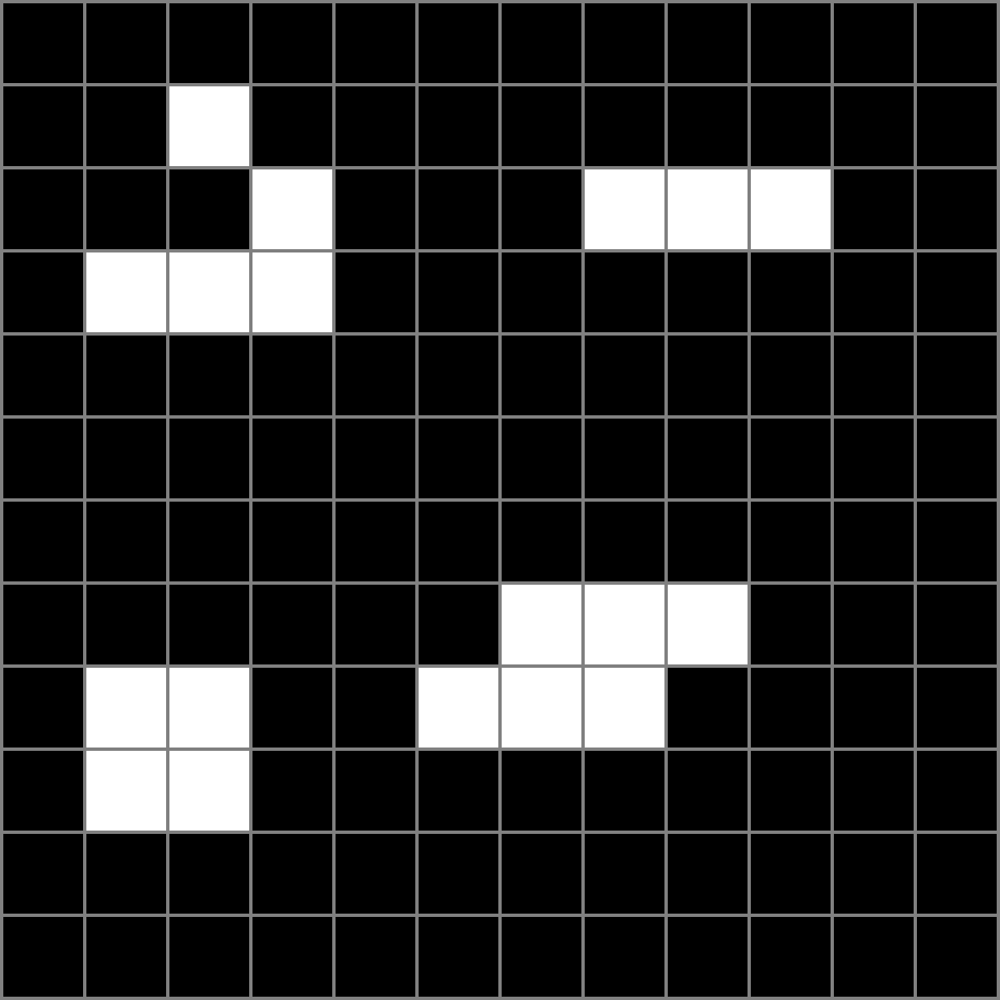
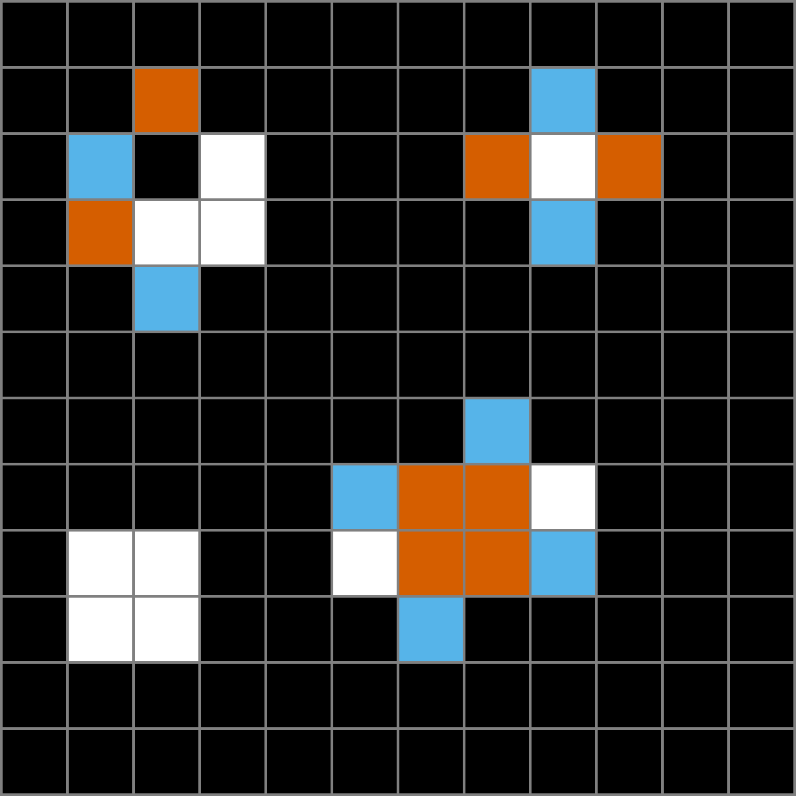
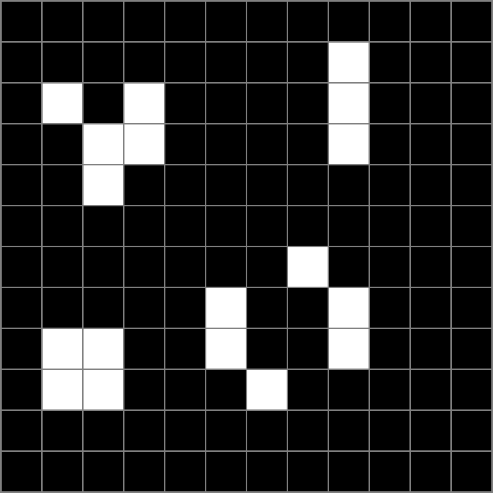

One step of Conway's Game of Life



- Alive now, dead next step
- Dead now, alive next step
A dead cell with exactly 3 live neighbors is born. A live cell with 2 or 3 live neighbors survives. Every other cell is dead in the next frame.
Top left is a glider, top right a blinker, bottom right a toad. The block at bottom left has no highlights because it never changes.